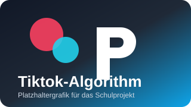

Tiktok-Algorithm
Dies ist eine Platzhalter-Unterseite für ein kommendes Schulprojekt zum Tiktok-Algorithmus. Die Seite nutzt dieselbe Grundstruktur, Navigation und Gestaltung wie die anderen Projektseiten im Repository.

Dies ist eine Platzhalter-Unterseite für ein kommendes Schulprojekt zum Tiktok-Algorithmus. Die Seite nutzt dieselbe Grundstruktur, Navigation und Gestaltung wie die anderen Projektseiten im Repository.
Inhalt folgt. Hier können später Materialien, Analysen, Quellen und Arbeitsergebnisse zum Thema Tiktok-Algorithmus ergänzt werden.